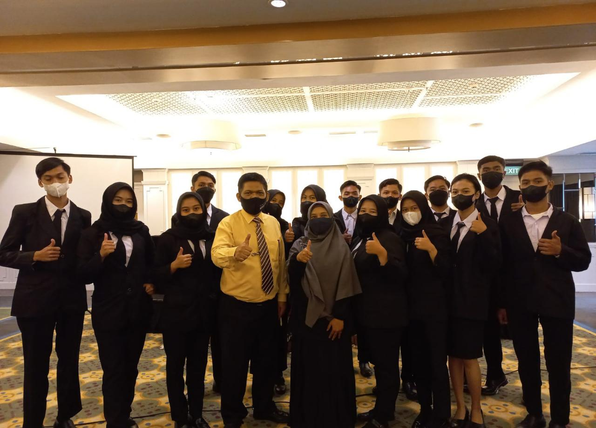
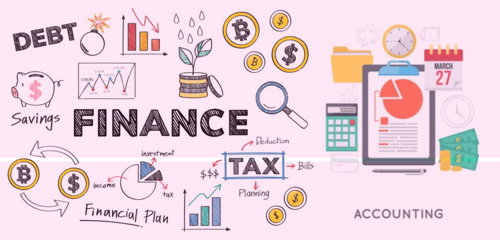

3 JURUSAN SMK YADIKA

RPL(rekayasa perangkat lunak)
RPL adalah program keahilan yang mempelajari perangkat lunak. RPL adalah
sebuah jurusan yang mempelajari dan mendalami semua cara-cara
pengembangan perangkat lunak termasuk pembuatan, pemeliharaan, manajemen
organisasi pengembangan perangkat lunak dan manajemen kualitas.

akomodasi perhotelan
Akomodasi Perhotelan atau sering disingkat AP adalah program keahlian
yang menggeluti dalam bidang front office dan house keeping. ... Front
Office (Reservation, Reception, Operator, Porter) House
Keeping(Houseman, Room, Laundry, Decoration)

akutansi dan lembaga keuangan
Akuntansi adalah program keahlian mempelajari cara memelihara keuangan.
kami mempersiapkan siswa untuk menjadi akuntan dengan mengajar mereka
tentang prinsip-prinsip akuntansi seperti audit, pelaporan, penganggaran
dan peraturan pajak. Akuntansi adalah sarana yang digunakan perusahaan
atau organisasi untuk menyampaikan informasi keuangannya